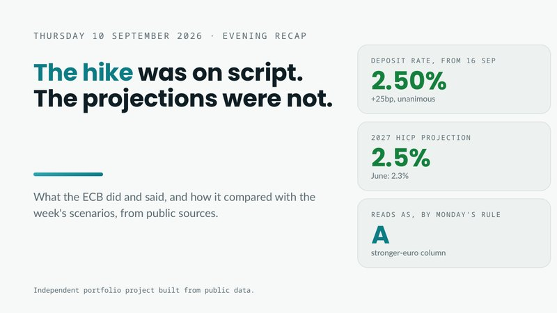
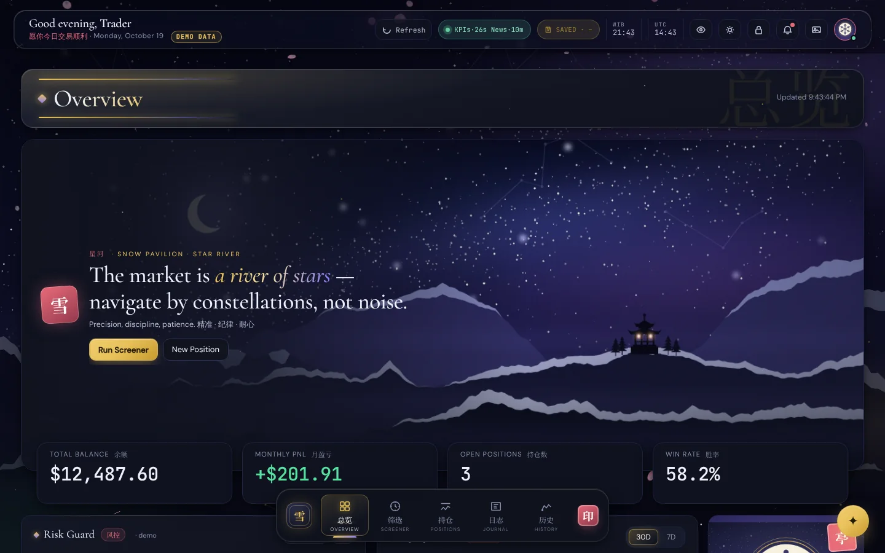
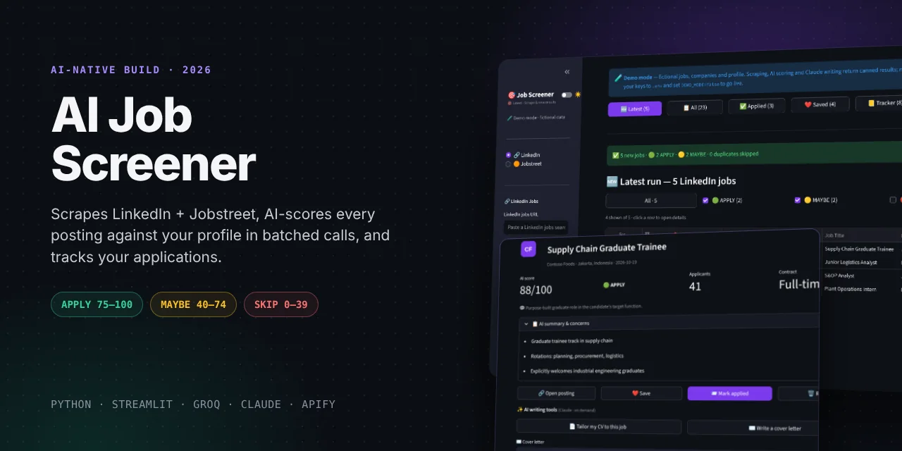
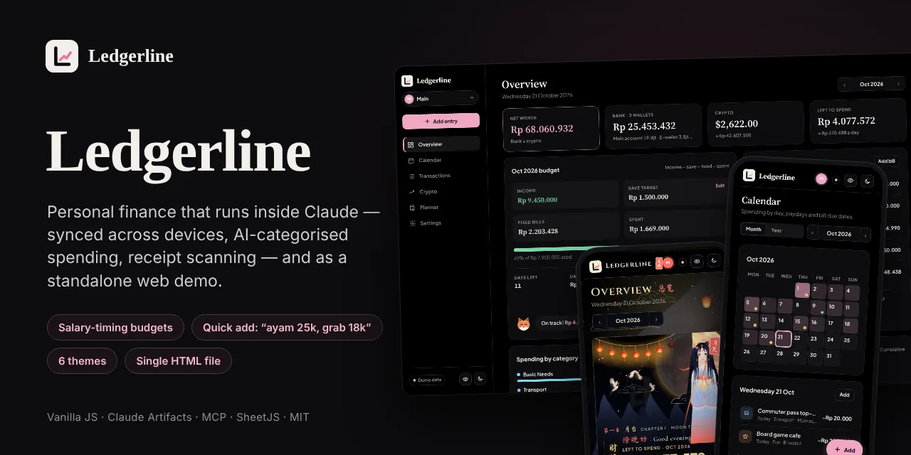
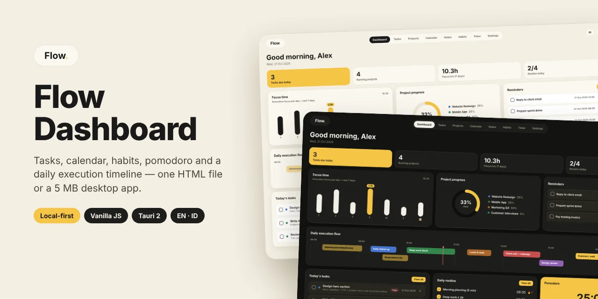

Work you can open and use.
A macro case study built from public data, and working tools I built by directing AI. Every tool has a live demo you can try right on its page.
Case study
Project 01
Why did the ECB's hike barely move the euro?
One decision week, followed from the Saturday before to the Saturday after: positioning, scenarios, a morning brief, headlines, an evening recap, and a study across eight meetings that tests whether the week was normal.
Built with AI
Every tool has a live demoI have no coding background. These are tools I needed in my own life, built in 2026 by directing AI: I write the specs and the rules, AI writes the code, and I test every change. Each page tells the story behind the tool and runs a limited demo with dummy data.

Trading Dashboard
A trading dashboard that runs on my own computer: screener, positions, journal, an AI chat that only uses live data, and hard risk limits.

AI Job Screener
Collects postings from LinkedIn and Jobstreet, scores each one against my profile with AI, and tracks every application.
Macro Master
A learning workspace that shows how the Fed, inflation, liquidity, bonds and crypto connect, with an AI tutor and a live market tape.

Ledgerline
A money app built around payday: log spending in plain words, see one number for what is left today, six themes.

Flow Dashboard
Tasks, calendar, habits and a focus timer around one timeline of the day. Runs in the browser, plus a small Mac app.